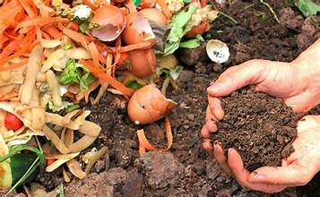

Tutorial Membuat Kompos dari Bahan Organik
Kompos membantu mengurangi limbah, menghasilkan pupuk organik, dan meningkatkan kesuburan tanah dengan cara yang murah dan mudah.
Bahan yang Dibutuhkan:
1. Sampah organik (sisa dapur seperti kulit buah, sayuran, ampas kopi, daun teh, dll).
2. Daun kering atau serbuk gergaji (sebagai bahan coklat).
3. Wadah untuk kompos (komposter, ember plastik, atau lubang di tanah).
4. Tanah atau kompos matang (sebagai starter mikroba).
5. Sekop kecil atau pengaduk.
Langkah - Langkah Membuat Kompos:
1. Pilih Lokasi untuk Komposting
2. Siapkan Wadah Komposter
3. Kumpulkan Sampah Organik
4. Atur Lapisan di Wadah Komposter
5. Ulangi Lapisan Secara Bergantian
6. Aduk dan Periksa Secara Berkala
7. Tunggu hingga Terurai